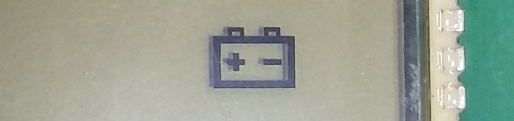
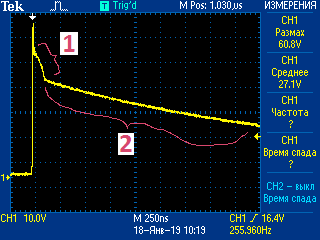
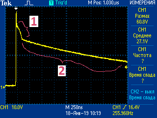
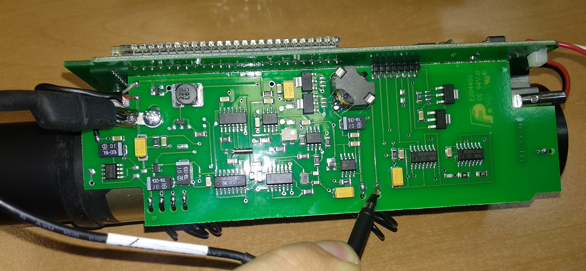

Дозиметр ренгеновского излучения
ДКР-АТ1103М.
Инструкция по настройке
Как прошить
Как сделать инициализацию 957
Как проверить ток потребления и ток заряда
Смещение -3В...-5В
Как включить спектрометрический режим
Как сделать инициализацию 957
Как проверить ток потребления и ток заряда
Смещение -3В...-5В
Как включить спектрометрический режим
- Все 11ХХ изначально прошиты прошивкой 1125, поэтому первое,что необходимо сделать, это прошить дозиметр нужной прошивкой
- Приготовить паспорт. В него будут записываться данные настройки:

Наклеить наклейки с внутренним порядковым номером, полученным с монтажа приборам. Этот же номер вписать в паспорт настройки
- Провести внешний осмотр плат прибора на:
- соответствие типа номиналов элементов и правильность их установки согласно ПЭ3 и СБ.
- отсутствие обрывов и коротких замыканий элементов и печатных проводников.
- отсутствие коротких замыканий по шинам питания.
- Визуально проконтролировать одинаково высокую контрастность свечения всех сегментов ЖКИ, для этого после включения прибора и появления индикации тестового изображения нажать и удерживать кнопку подсветки для удержания на табло тестового изображения на требуемое время, после чего кнопку отпустить
- Провести инициализацию 957
- Проверить ток потребления и ток заряда БА
- К выключенному ДКР подключить адаптер 12В, при этом на табло должен загореться символ , указывающий на подключение внешнего источника питания и индицирующий работу режима заряда БА 
- Проверить осциллографом наличие светодиодного импульса в точке 11 платы преобразователя ”фон”.
Данные записать в паспорт ("Умнож")
 Максимальная амплитуда сигнала не должна превышать 100В и иметь такую форму(обязательно
иметь "горб"[1] и длинный "спад"[2]):

Максимальная амплитуда сигнала не должна превышать 100В и иметь такую форму(обязательно
иметь "горб"[1] и длинный "спад"[2]):

- Проверить осциллографом наличие высоковольтных импульсов в точке 14 платы преобразователя ”фон”.
Данные записать в паспорт ("Uвыс")

Максимальная амплитуда сигнала не должна превышать 70в и иметь такую форму
(при превышении напряжения свыше 70В, незамедлительно отключите прибор!):

- Выставить смещение -3…-5мВ Данные записать в паспорт ("Смещ.")